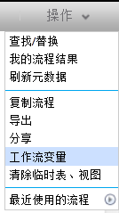
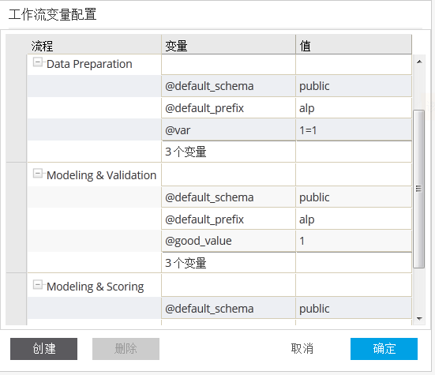

用户可以在流程中定义变量，用于SQL表达式以及操作单元中的其他参数。要编辑流程变量，请确保当前处于编辑流程信息状态，点击操作下拉菜单中的变量设置按钮。


在面板中列出了当前编辑的流程中定义的所有变量信息，包括子流程信息中的变量信息。按流程名称分组。用户可以添加，修改，删除当前编辑流程中的变量信息。但只能更新子流程中变量值。另外，@default_schema和@default_prefix为流程默认变量，不能修改名称或删除。当子流程中的变量名与父流程中的变量名相同时，鼠标经过子流程变量会弹出消息框予以提示。